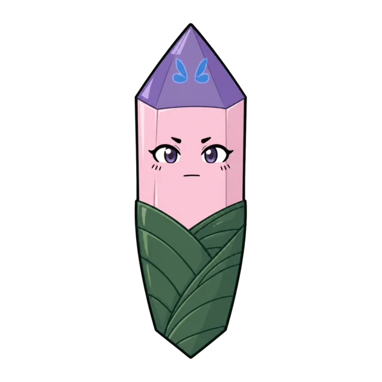

Ball is God?! ٹاور گھمائیں۔ خود ٹکراؤ بنیں۔
ایک ہارڈ کور عمودی نزول آرکیڈ جہاں افقی ڈریگ ٹاور کو گرتے ہوئے Espa کے گرد گھماتا ہے۔ محفوظ لینڈنگ چھوڑیں، کومبو سمیش چارج کریں اور ایک افسانوی دنیا سے گزریں جہاں ایک بھی غیر محفوظ ہٹ رن ختم کر دیتا ہے۔
فعال پروڈکشن: دس مقامات کے مناظر، باسز، شاخ دار مکالمے اور کرما کے راستے جو کھیل کے اصول بدلتے ہیں۔
گھمائیںٹاور کو Espa کے ارد گرد گھسیٹیں
خطرہتین محفوظ لینڈنگ چھوڑ دیں
اسمیشپلیٹ فارم سے گزریں
موجودہ بلڈ کے اندر
کرما مکالمے سے زیادہ بدلتا ہے۔
روشن، غیر جانبدار اور تاریک کرما کے راستے شیلڈ کے برتاؤ، وارننگ سگنلز، دشمنوں کی جارحیت اور باس کے مراحل کو بدل دیتے ہیں، اس لیے کہانی آپ کے کھیلنے کا انداز بدل دیتی ہے۔
بلڈ اسٹیٹس فعال پروڈکشنمکالمے کی تمام دس دنیائیں
تمام دس دنیاؤں کے مکالمے کے پس منظر، Ena سے Deka تک نزول کی ترتیب میں۔


موجودہ پروڈکشن UI
موجودہ بلڈ میں لیول سلیکٹ، مکالمے اور نتیجے کی اسکرینیں۔
یہ موجودہ فلو اسی ترتیب میں ہے جس میں آپ اس سے ملتے ہیں: لیول سلیکشن، مکالمہ، ایک اہم انتخاب، پھر جیت یا الگ شکست کی اسکرین۔ نیچے دی گئی ہر تصویر پروڈکشن Unity پروجیکٹ کے آرٹ سے لی گئی ہے۔
آسمانی راستہ دس 100 لیول کے ابواب میں جنریٹ شدہ لیولز کا انتخاب کرتا ہے۔
پروڈکشن مینو 100 لیول کے ابواب میں دس مقامات کا نقشہ بناتا ہے اور براہ راست منتخب رن میں کھلتا ہے۔

 201
201مکالمہ اسی مقام کے اندر ہوتا ہے۔
کردار کا پورٹریٹ، مقام کا آرٹ اور بولنے والے کی تختی ایک ہی عمودی فریم میں ہیں۔


Shash
آگے بڑھیں، پھر - لیکن یہ نہ سوچیں کہ یہ آسان ہوگا۔ Trials آپ کا انتظار کر رہے ہیں جو اس سے پہلے کی ہر چیز کو محض ایک چھوٹی سی چیز بنا دے گی۔
04 / سنگ میل کا انتخاب
جواب نزول کا حصہ بن جاتا ہے۔
مقامی لیولز 90 اور 100 پر، مخصوص پینل مکالمہ حل ہونے سے پہلے “بخشنا یا مارنا” کا فیصلہ مانگتا ہے۔

بخش دو
مار ڈالو
05 / نتائج کا مینو
جیتنے پر آگے بڑھتے ہیں۔ ہارنے پر اسی چیلنج پر واپس آتے ہیں۔
موجودہ تعمیر میں دو الگ نتائج کی حالتیں ہیں: PanelWin ری پلے اور اگلا لیول پیش کرتا ہے، جب کہ PanelOver ایک واضح ری پلے ایکشن رکھتا ہے۔
جیت · PanelWin
نزول مکمل ہو گیا
 دوبارہ کھیلیں
اگلا
دوبارہ کھیلیں
اگلا
دوبارہ کھیلیں
اگلا
ڈائیلاگ کے کردار
راستے میں چہرے ملے۔
درست پروڈکشن والے کھلے اور بند پورٹریٹ کے جوڑوں والے تمام 25 کردار ذیل میں شامل ہیں۔ ایکسپریشن بدلنے کے لیے کارڈ پر ہوور کریں یا فوکس کریں۔





گیم کا جائزہ
Ball is God?! ایک ہارڈ کور آرکیڈ گیم ہے، جو گھومتے ٹاور میں گرنے کے بارے میں ہے۔
خیال
Espa کو ایک الٰہی ٹاور سے نیچے لے جائیں۔ ایک غلطی رن ختم کر سکتی ہے، اور آپ کے بڑے انتخاب دنیا کے کھیل کا انداز بدل دیتے ہیں۔
موجودہ بلڈ
دس لوکیشن سینز، پروسیجرل ٹاور جنریشن، کومبو سمیش، سوائپ شیلڈ، باس کنفیگریشن، برانچنگ ڈائیلاگ، پروڈکشن مینیو اور ایکسپریشن ریڈی پورٹریٹ لاگو کیے گئے ہیں۔
ہدف مخاطبین
وہ کھلاڑی جنہیں مشکل موبائل آرکیڈ گیمز، خطرے اور انعام کی ٹائمنگ اور باسز پسند ہیں، اور ساتھ چلنے کے لیے کہانی بھی۔
اسٹیٹس
فعال پروڈکشن۔ حالیہ کام میں رن ٹائم سسٹمز، دنیاؤں کا آرٹ، ٹیسٹنگ اور فون پر کھیل کا تجربہ شامل ہیں۔
خصوصیات
Ball is God?! میں آپ کیا کرتے ہیں
گھسیٹ کر گھمانے والا نزول
افقی ڈریگ ٹاور کو خود بخود گرنے والے Espa کے گرد گھماتا ہے، خلاؤں، خطرات اور محفوظ پلیٹ فارمز کو ترتیب میں لاتا ہے۔
ہارڈ کور آرکیڈ کا دباؤ
ایک بغیر دفاع وار رن ختم کر دیتا ہے، اس لیے آپ کو ٹاور کو پڑھنا اور ہر حرکت کا وقت درست رکھنا پڑتا ہے۔
باسز اور افسانوی دنیائیں
دس مقامات کے مناظر، جن میں سے ہر ایک کے اپنے باسز ہیں، کہانی کو ایک دنیا سے اگلی دنیا تک لے جاتے ہیں۔
ایسے انتخاب جو اصول بدل دیں
رحم، قوت اور کرما مکالمے، ڈھال کے اصول، دشمن کی جارحیت، ٹیلی گراف اور باس کے مراحل کو بدلتے ہیں۔
گیم پلے لوپ
Ball is God?! کیسے کھیلیں
- مرحلہ 01نزول پڑھیں
اگلے پلیٹ فارمز، خالی جگہوں اور خطرات پر نظر ڈالیں اور گرتے ہوئے محفوظ ٹائمنگ کے موقعے تلاش کریں۔
- مرحلہ 02ٹاور کو گھمائیں
افقی ڈریگ دنیا کو Espa کے گرد موڑ دیتا ہے، ایک محفوظ پلیٹ فارم یا دانستہ خلا کو سیدھ میں لاتا ہے۔
- مرحلہ 03خطرہ اور اسمیش
کومبو سمیش چارج کرنے کے لیے تین پلیٹ فارمز کو چھوڑیں، پھر ڈھانچے کو توڑ دیں جب کہ شیلڈ ایک جان لیوا غلطی کا احاطہ کرتی ہے۔
- مرحلہ 04نتیجہ منتخب کریں
رحم اور قوت کرما، مکالمے اور گیم پلے کے اصولوں کو شکل دیتے ہیں جو دشمنوں اور باسز تک لے جائے جاتے ہیں۔
کہانی / دنیا
ایک افسانوی ٹاور جہاں آپ کے انتخاب نیچے تک آپ کے ساتھ چلتے ہیں۔
Ball is God?! موبائل عمودی-نزول آرکیڈز کے ساتھ بچپن کی دلچسپی سے شروع ہوا: خالی جگہیں پڑھنا، تیزی سے رد عمل ظاہر کرنا اور جبلت سے زندہ رہنا۔
یہ فارمیٹ اس سے زیادہ بھی سنبھال سکتا تھا: باسز، شخصیت والے کردار، کہانی اور اخلاقی کشمکش۔ موجودہ پروجیکٹ Espa کے ساتھ دس مقامات کے مناظر اور عجیب کرداروں کی ٹولی سے گزرتا ہے، ایسے انتخاب کے ساتھ جو کہانی اور کھیل دونوں بدل دیتے ہیں۔
اس طرح مقصد ایک سادہ عمودی نزول آرکیڈ بن گیا، جس میں باس فائٹ کا دباؤ اور کہانی پر مبنی آر پی جی کے نتائج شامل ہیں۔
- وژن
- گھومتے ٹاور اور افسانوی کہانی والا آرکیڈ
- موجودہ دنیا کا دائرہ کار
- دس مقامات اور باس کنفیگریشنز
- کہانی کا مرحلہ
- طویل کہانی کا مکمل مسودہ
- پروڈکشن کی حالت
- فعال پروڈکشن
ایک نظر میں
سادہ ڈریگ کنٹرولز، اور ایسی کہانی جو اصول بدل دیتی ہے۔
گھسیٹ کر گھمانے والے کنٹرولز فوری ہیں۔ باقی سب کچھ افسانوی دنیاؤں، باسز اور کھیل بدل دینے والے انتخاب سے آتا ہے۔
موجودہ بلڈ میں پہلے ہی ڈیٹرمنسٹک ٹاور جنریشن، خطرے اور انعام والا اسمیش، ایک وار میں ناکامی، باسز، شاخ دار مکالمہ اور گیم پلے بدلنے والا کرما یکجا ہیں۔
- صنف
- کہانی پر مبنی عمودی نزول آرکیڈ
- پلیٹ فارم کا ہدف
- iOS / Android
- سیشن کی شکل
- تیز مہارت پر مبنی راؤنڈز
- اسٹوڈیو
- WillowinWorlds
مواد ڈاؤن لوڈ کریں
Ball is God?! پریس اور تخلیق کار کے مواد
پریس کوریج، پبلشر ریویو اور اسٹور صفحے کے حوالوں کے لیے WebP پریویوز۔ مکمل ریزولوشن کی سورس فائلیں درخواست پر دستیاب ہیں۔
برانڈ اور کردار
گیم آئیکن کے علاوہ تمام 25 موجودہ کردار جن میں مکمل پروڈکشن ڈائیلاگ پورٹریٹ ہیں۔ نام Unity لوکلائزیشن کیز سے ملتے ہیں۔
Espaکھلاڑی کردار کا پورٹریٹ۔
Revlaپروڈکشن ڈائیلاگ پورٹریٹ۔
Shashپروڈکشن ڈائیلاگ پورٹریٹ۔
Shushپروڈکشن ڈائیلاگ پورٹریٹ۔
Shishپروڈکشن ڈائیلاگ پورٹریٹ۔
Gigoپروڈکشن ڈائیلاگ پورٹریٹ۔
Gogaپروڈکشن ڈائیلاگ پورٹریٹ۔
Gigaپروڈکشن ڈائیلاگ پورٹریٹ۔
Askoldپروڈکشن ڈائیلاگ پورٹریٹ۔
Mirasپروڈکشن ڈائیلاگ پورٹریٹ۔
Hihپروڈکشن ڈائیلاگ پورٹریٹ۔
Hehپروڈکشن ڈائیلاگ پورٹریٹ۔
Hahپروڈکشن ڈائیلاگ پورٹریٹ۔
Musyaپروڈکشن ڈائیلاگ پورٹریٹ۔
Dusyaپروڈکشن ڈائیلاگ پورٹریٹ۔
Susyaپروڈکشن ڈائیلاگ پورٹریٹ۔
Vladusپروڈکشن ڈائیلاگ پورٹریٹ۔
Frishaپروڈکشن ڈائیلاگ پورٹریٹ۔
Lurenپروڈکشن ڈائیلاگ پورٹریٹ۔
Kurenپروڈکشن ڈائیلاگ پورٹریٹ۔
Don Yagonپروڈکشن ڈائیلاگ پورٹریٹ۔
Luryaپروڈکشن ڈائیلاگ پورٹریٹ۔
Khleyaپروڈکشن ڈائیلاگ پورٹریٹ۔
Varonپروڈکشن ڈائیلاگ پورٹریٹ۔
Whiteپروڈکشن ڈائیلاگ پورٹریٹ۔
مینو کے پس منظر
موجودہ پروڈکشن آرٹ ورک جو آسمانی لیول کے انتخاب کے نظام کے ذریعے استعمال کیا جاتا ہے۔
 آسمانی مینو
آسمانی مینوعمودی نزول کی دنیائیں
دس موجودہ مقام کے پس منظر کا مکمل سیٹ، Ena سے Deka تک ترتیب دیا گیا۔
 01 · آسمانی دنیاEna عمودی نزول کا پس منظر۔
01 · آسمانی دنیاEna عمودی نزول کا پس منظر۔
 02 · خلائی دنیاDyo عمودی نزول کا پس منظر۔
02 · خلائی دنیاDyo عمودی نزول کا پس منظر۔
 03 · طوفان کی دنیاTria عمودی نزول کا پس منظر۔
03 · طوفان کی دنیاTria عمودی نزول کا پس منظر۔
 04 · برف کی دنیاTessera عمودی نزول کا پس منظر۔
04 · برف کی دنیاTessera عمودی نزول کا پس منظر۔
 05 · آتش فشاں کی دنیاPente کا پس منظر؛ گیم میں متحرک۔
05 · آتش فشاں کی دنیاPente کا پس منظر؛ گیم میں متحرک۔
 06 · سمندر کی دنیاEksi عمودی نزول کا پس منظر۔
06 · سمندر کی دنیاEksi عمودی نزول کا پس منظر۔
 07 · صحرائی دنیاEpta عمودی نزول کا پس منظر۔
07 · صحرائی دنیاEpta عمودی نزول کا پس منظر۔
 08 · جنگل کی دنیاOhto عمودی نزول کا پس منظر۔
08 · جنگل کی دنیاOhto عمودی نزول کا پس منظر۔
 09 · غار کی دنیاEnnea عمودی نزول کا پس منظر۔
09 · غار کی دنیاEnnea عمودی نزول کا پس منظر۔
 10 · جہنم کی دنیاDeka عمودی نزول کا پس منظر۔
10 · جہنم کی دنیاDeka عمودی نزول کا پس منظر۔
اسٹوری آرکیڈ پس منظر
مکمل ڈائیلاگ لوکیشن سیٹ: ہال آف لائٹ کے علاوہ تمام دس دنیاؤں کے لیے پس منظر۔
 00 · روشنی کا ہالابتدائی مکالمے کا پس منظر۔
00 · روشنی کا ہالابتدائی مکالمے کا پس منظر۔
 01 · آسمانی مکالمہEna کہانی کا پس منظر۔
01 · آسمانی مکالمہEna کہانی کا پس منظر۔
 02 · خلائی مکالمہDyo کہانی کا پس منظر۔
02 · خلائی مکالمہDyo کہانی کا پس منظر۔
 03 · طوفانی مکالمہTria کہانی کا پس منظر۔
03 · طوفانی مکالمہTria کہانی کا پس منظر۔
 04 · برف کا مکالمہTessera کہانی کا پس منظر۔
04 · برف کا مکالمہTessera کہانی کا پس منظر۔
 05 · آتش فشاں مکالمہPente کہانی کا پس منظر۔
05 · آتش فشاں مکالمہPente کہانی کا پس منظر۔
 06 · سمندری مکالمہEksi کہانی کا پس منظر۔
06 · سمندری مکالمہEksi کہانی کا پس منظر۔
 07 · صحرائی مکالمہEpta کہانی کا پس منظر۔
07 · صحرائی مکالمہEpta کہانی کا پس منظر۔
 08 · جنگل کا مکالمہOhto کہانی کا پس منظر۔
08 · جنگل کا مکالمہOhto کہانی کا پس منظر۔
 09 · غار کا مکالمہEnnea کہانی کا پس منظر۔
09 · غار کا مکالمہEnnea کہانی کا پس منظر۔
 10 · جہنمی مکالمہDeka کہانی کا پس منظر۔
10 · جہنمی مکالمہDeka کہانی کا پس منظر۔
Ball is God?! کے عام سوالات
Ball is God?! کے بارے میں عام سوالات
کس قسم کی گیم Ball is God?! ہے؟
ایک ہارڈ کور عمودی نزول آرکیڈ۔ آپ گرتے ہوئے Espa کے گرد ٹاور گھماتے ہیں، محفوظ لینڈنگ چھوڑ کر اسمیش چارج کرتے ہیں اور افسانوی دنیاؤں کو چیرتے ہوئے آگے بڑھتے ہیں۔
Ball is God?! کیسے کھیلتے ہیں؟
ٹاور کو گھمانے کے لیے افقی طور پر گھسیٹیں، سمیش چارج کرنے کے لیے تین پلیٹ فارمز کو چھوڑیں، اور جب کولڈاؤن شیلڈ کو جان لیوا ہٹ جذب کرنا ضروری ہو تو عمودی طور پر سوائپ کریں۔
کیا Ball is God?! جاری ہو چکا ہے؟
ابھی نہیں۔ یہ فعال پروڈکشن میں ہے، جس میں رن ٹائم سسٹمز، دنیاؤں کا آرٹ، کہانی کا مواد اور ٹیسٹنگ شامل ہیں۔ عوامی ریلیز کی کوئی تاریخ نہیں ہے۔ ہدف پلیٹ فارمز iOS اور Android ہیں۔
Ball is God?! کو کیا چیز منفرد بناتی ہے؟
اس میں خطرے اور انعام والے آرکیڈ دباؤ کے ساتھ دس مقامات ہیں، اور کرما مکالموں، دشمنوں، وارننگ سگنلز، شیلڈز اور باسز کو بدل دیتا ہے۔
Ball is God?! کون بناتا ہے
WillowinWorlds، ایک آزاد اسٹوڈیو جو موبائل پہیلی اور آرکیڈ گیمز بناتا ہے۔
کیا میں Ball is God?! کے پریس مواد استعمال کر سکتا ہوں؟
جی ہاں، پریس، پبلشر ریویو اور اسٹور کے حوالوں کے لیے۔ سورس فائلیں نجی رہتی ہیں جب تک آپ ہم سے نہ مانگیں۔
Ball is God?! ڈیولاگ
کیا بدلا اور کب
- دنیا کی سطحیں اور خطرات کی توثیق
کرداروں کی پیشکش، ڈیٹرمنسٹک جنریشن اور کانٹوں کے خطرات پر ایک مشترکہ بصری اور توثیقی جائزہ لیا گیا۔
- جولائی 2026پروڈکشن UI اور کرداروں کا جائزہ
لیول سلیکشن، مشترکہ ایکشن کنٹرولز، عمودی مکالمے کا فریم اور کرداروں کے جوڑی دار تاثرات اب شامل ہو چکے ہیں۔
- فروری 2026پروجیکٹ کے دائرہ کار کا جائزہ
ٹیم نے ایک اہم کہانی انضمام کا مرحلہ مکمل کیا اور پروجیکٹ کے مکمل پیمانے کا جائزہ لیا: دس دنیائیں، اخلاقی انتخاب، باسز اور متعدد اختتام۔
- اپریل-مئی 2025کہانی کی دوبارہ تحریر اور صلاحیتیں
مکمل کہانی دوبارہ لکھی گئی، کردار کی صلاحیتوں کو بہتر بنایا گیا اور اخلاقی نتائج واضح ہو گئے۔
- اگست 2024کہانی کی سمت کا آغاز
ٹیم نے فیصلہ کیا کہ Ball is God?! کو سادہ آرکیڈ نزول سے بڑھ کر ہونا چاہیے، اور ایک افسانوی کہانی اور اخلاقی انتخاب کا وژن شامل کیا۔
- جولائی 2024اصل تصور
یہ پروجیکٹ اسٹوڈیو کے پہلے گیم آئیڈیا کے طور پر شروع ہوا: ایک الٰہی ٹاور میں گرنے کے بارے میں تیز عمودی آرکیڈ گیم۔
- موجودہ بلڈآرکیڈ اور کہانی ایک ہی بلڈ میں
گھومتے ٹاور کا نزول، کومبو اسمیش، سوائپ شیلڈ، باسز، مکالمہ اور کرما اب ایک ہی بلڈ میں مل کر کام کر رہے ہیں۔